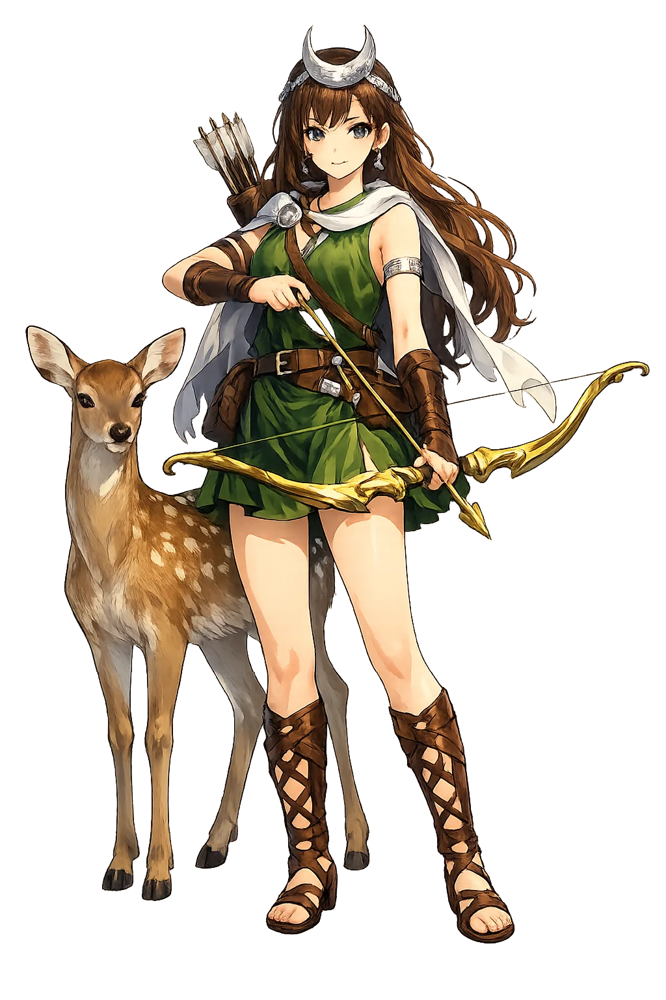
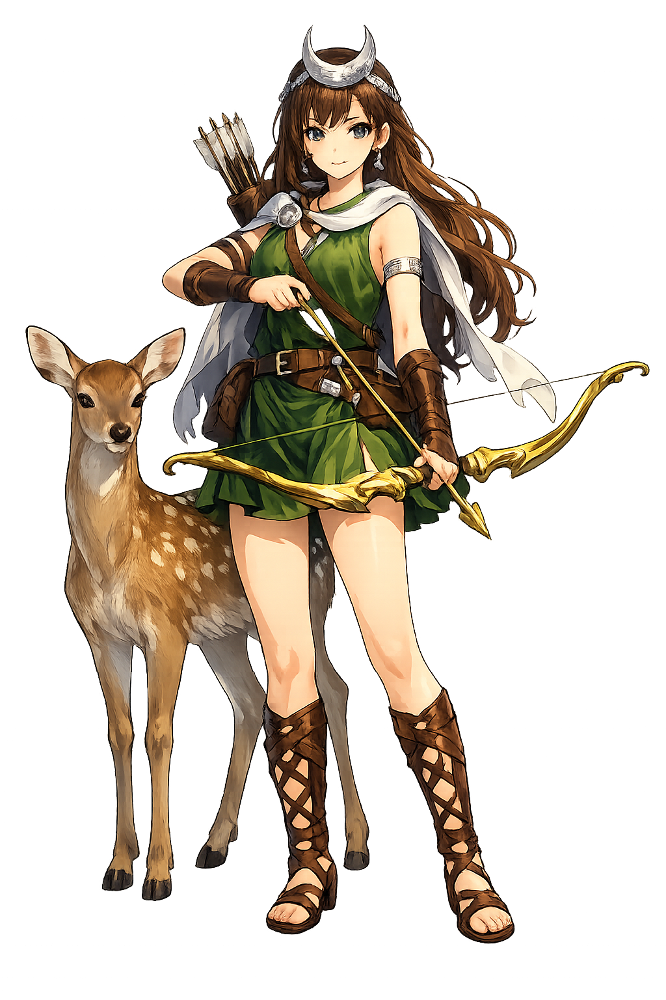

The Authentic Orthography
Moon, Hunt, Wilderness · The Huntress of the Groves

Unicode restoration and ASCII comparison
Diāna
The name survives only in scholarly transliteration. Diāna is the standard Roman romanisation, documented in academic sources — “'The bright one, goddess' (from the root *dyēu-, to shine)”. Its macron-length vowels preserve distinctions lost in plain ASCII.
The original script for this roman name has not yet been added to PUNICODEX. The form shown is a scholarly transliteration.
diana
Reduced to plain diana, the name loses everything that made it specific: macron-length vowels. What remains is an ASCII string that machines can parse but that no longer speaks with its original voice.
Diāna
The Unicode restoration recovers what ASCII flattened. Diāna restores macron-length vowels, returning the name to its original written dignity. The domain encodes to Punycode, but the browser displays the truth.
Diāna.com → xn--dina-rsa.com
The non-ASCII characters in Diāna are encoded while the ASCII remains visible. To the DNS, it is Punycode. To humanity, it is Diāna.
How Diāna is preserved in writing
A bespoke provenance study for Diāna is being prepared by the PUNICODEX scholarly team.
Contribute scholarly provenance →How Diāna was spoken
Moon, Wild, and the King of the Wood
Diāna is Rome's own goddess before she is Artemis imported: mistress of the wildwood, the moon, and women in labour, whose strangest institution — the priest-king of Nemi who wins his office by murder — haunted anthropology for a century.
"Of the three ways" — her title at the crossroads, where moon, hunt, and underworld meet.
The lake called "Diana's Mirror," sacred grove of the rex Nemorensis — the priest who slew the slayer.
Her federal temple, founded by Servius Tullius as the common sanctuary of the Latin League.
The hunter who saw her bathing and was run down by his own pack — the wild's answer to the gaze.
Stories of Diāna
Roman myth largely retells Artemis' stories under Diāna's name — but her cult institutions are Italy's own, older than the stories, and stranger.
Ovid tells it as a warning about seeing: the hunter Actaeon, wandering at noon, stumbles on Diāna bathing in a hidden valley. She splashes him with water — "now you may tell that you saw me, if you can" — and he becomes a stag, torn apart by his own hounds who know only the shape of prey, not the voice of their master.
At Nemi, in Diāna's lakeside grove, the priesthood was held by an escaped slave who became rex Nemorensis by plucking a bough from the sacred tree and killing his predecessor in single combat — and who then guarded the tree, sword in hand, against the next challenger. The rite, already archaic in Ovid's day, frames Frazer's entire Golden Bough.
Roman tradition made Nemi the retirement of a Greek ghost: Virbius, the twice-man — Hippolytos, dragged to death by his horses and raised again by Aesculapius — hidden by Diāna in her grove, where no horse may enter. The goddess shelters the chaste hunter her Greek sister could not save.
Servius Tullius founded Diāna's temple on the Aventine as the federal shrine of the Latin cities — the one cult they shared with Rome as equals. A Sabine's marvel of a cow, sacrificed there by a cunning priest, sealed Rome's primacy: Roman historians tell the story as the moment alliance tipped toward empire.
Diāna is the wild that insists on a temple. Her priest wins office by violence in her most peaceful grove; her deer are protected by being hunted only by her. She asks the oldest question of stewardship: whether anything can be preserved without being owned — and answers with a lake that reflects the moon without holding it.
Enter Extended Lore